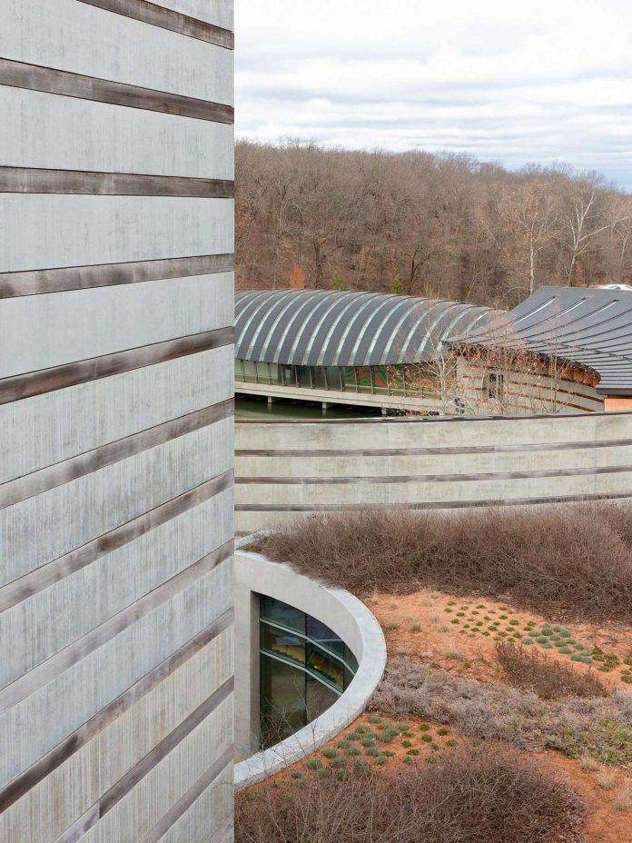
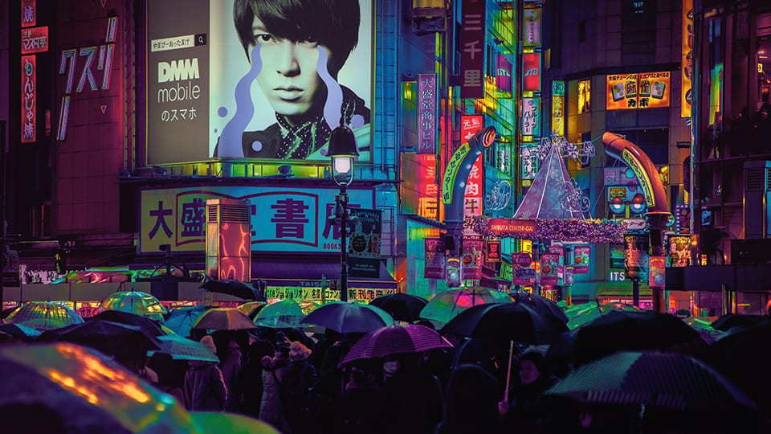
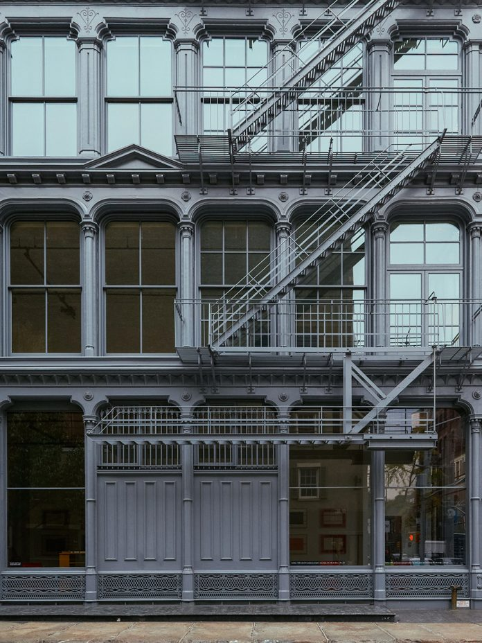
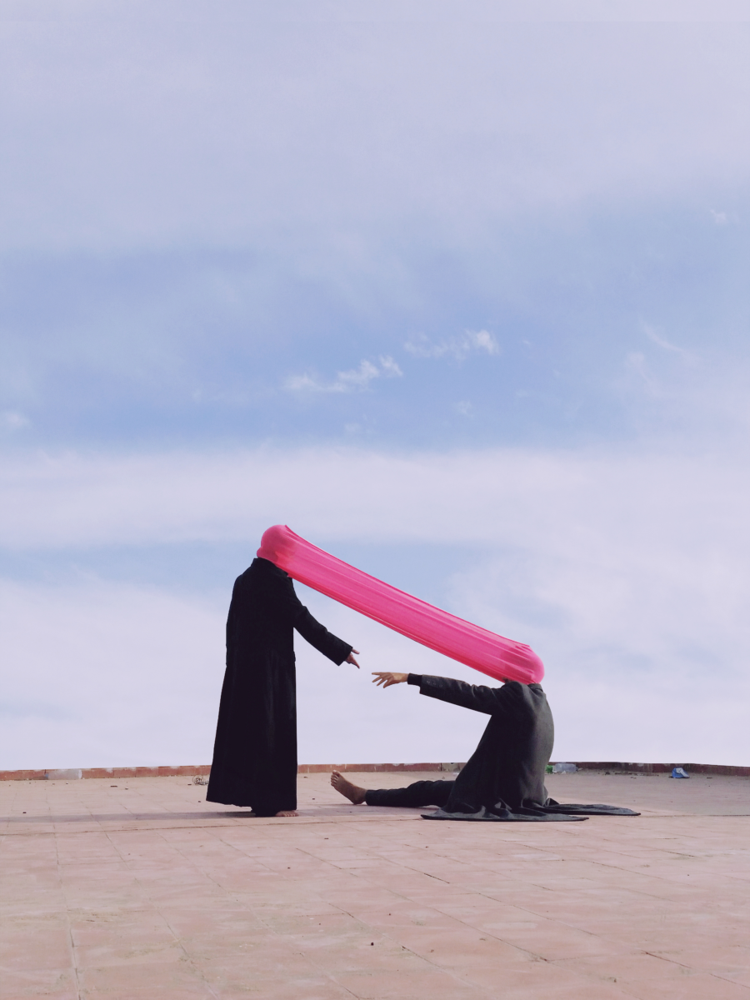
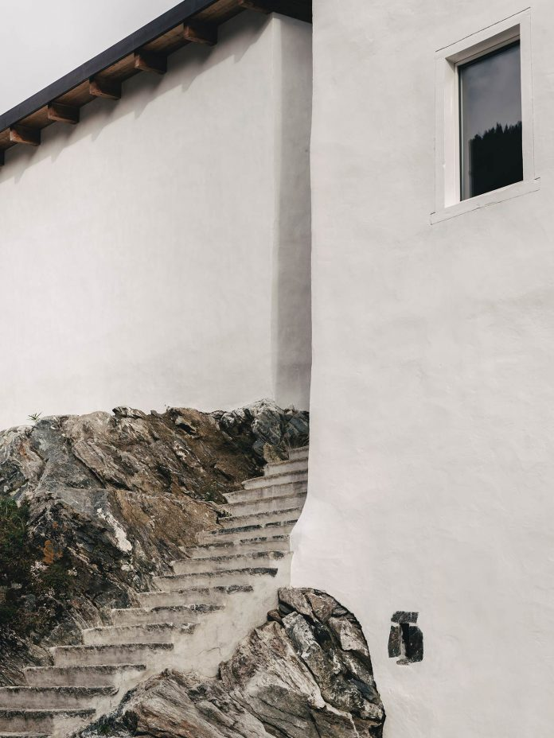
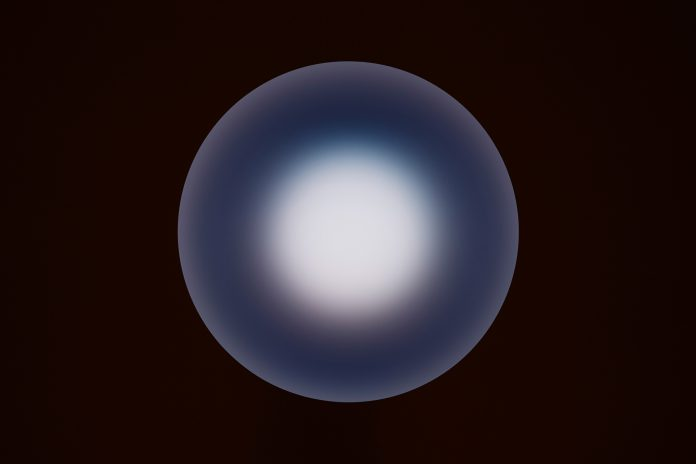
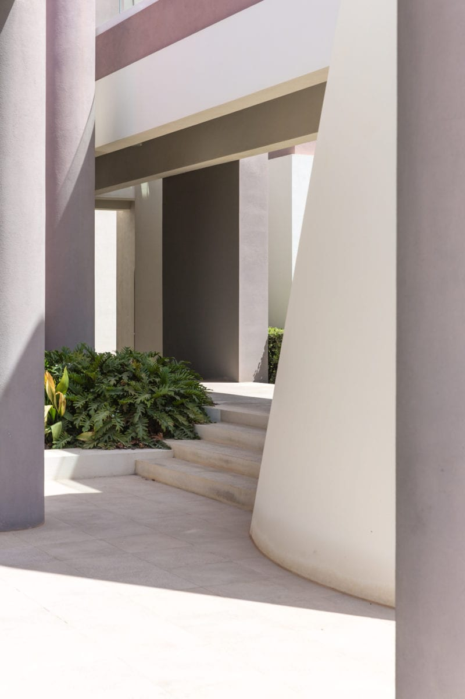

Exploring Crystal Bridges Museum of American Art, Arkansas.

Crystal Bridges

Journey Into Midnight
Liam Wong’s photographs are deeply influenced by the visual identities of video games, utilising vibrant colours, open landscapes and cyberpunk imagery.

Donald Judd: 101 Spring Street
Visiting the Judd Foundation in New York.

The Space Inbetween
Ismail Zaidy’s images explore distance between family members – the emotional estrangement and tensions that can cloud our experiences.

Alpine Air
Exploring the art and nature of St. Moritz, Switzerland, with a visit to Badrutt’s Palace, Museum Susch, and Hauser and Wirth’s latest gallery.

Constellation
Three works by James Turrell at Pace Gallery, London.

Clean Lines
Lina Benouhoud’s works – documenting real-life locations – feature subtle changes in perspective on contemporary buildings and still lifes.